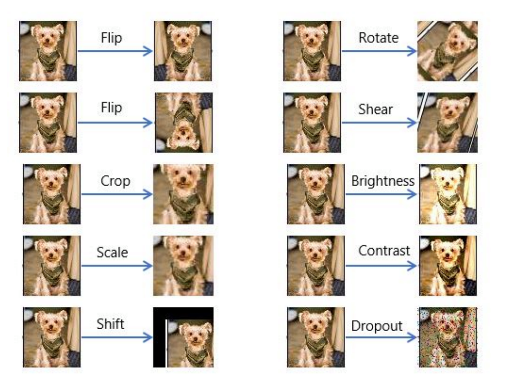

Approach
Data Preparation
As mentioned above, we are using the tiny-imagenet dataset. All of our data is dynamically augmented in two main ways. The first and most important modification is generating and applying perturbations. This process will be described in-depth in a future section. The second augmentation method is more conventional data augmentation such as applying simple transformations to the images in the data loader. We use TensorFlow's built-in ImageDataGenerator class to flip, shift, and zoom the images in a pseudo-random fashion as the data is transferred from the directory to the model.
Baseline Model
We originally implemented as relatively shallow CNN consisting of 3 layers each of which had a convolutional layer, a Relu non-linearity, and a max-pooling function, followed by a fully connected layer for the output. We quickly realized that this architecture was not going to perform as well as we needed. We began researching state of the art models that had proven capable of superhuman performance. We settled on res-net, due to a combination of its impressive performance and relatively simple architecture. Due to our limited time and computational resources, a model that we could train and fine-tune quickly was essential . Our implementation of Res-Net performed well on the public validation set with XX.X% accuracy on 10,000 images. Below is a graphical representation of our implementation of Res-Net:

Adversarial Training
To defend against, adversarial examples found in nature, we first looked at what sort of images caused problems in the 'Natural Adversarial Examples' paper. We concluded that many of the examples that were misclassified could be broadly sorted into 3 types of problem images. The first type is just an out of distribution example. If the model hasn't ever seen a squid, it is not going to be able to recognize one at test time. We would love for the model to just admit it has no idea what it's looking at instead of making a high confidence guess but this is slightly out of scope. We aim to improve performance, not allow for elegant failure. Hardening against out of distribution examples is often just improving the dataset by making it bigger. Another type is a known object with a background or overlay of a texture that was confusing to the classifier. Here are some examples of that:

As mentioned above, ANNs are partial to texture, so this type of example causes some problems that are hard to avoid. The third broad category is known objects but where the picture is taken from a slightly different angle. The training set might have a front view of a car, but the test picture might be from a traffic camera where the angle is different.
This third type is much broader, consisting of any obstruction or modification that isn't covered by the first two. Some common examples are and object that is only partially in the frame or the object is zoomed in on and the net can't recognize it. This is a fairly common type of perturbation that occurs often in real-life photography and video systems and can often happen for a few consecutive frames in a video in which a known object is partially obstructed. For example, a video where a person is walking might have several frames where the person is standing in such a way that only half of their body is visible. A human would have no problem working with this footage but computers often do.
In order to train against these types of images, develop a list of functions that, when given an image, will generate a new image that is mean to look like a perturbation that might occur naturally. We do this because we want the network to associate these confusing images with the correct class, and the easiest way to forge an association is simply retraining, but data collection and labeling is expensive and difficult normally. Collecting and labeling a significant amount of adversarial data would be nearly impossible in the time frame allotted so we needed to automate the process of sourcing adversarial images.
We developed a collection of functions that perform the following effects to images:
- flip
- zoom
- rotate
- scale
- shift
- sheer
- brightness
- dropout
- partial delete
- mesh overlay
- blur
Each of these is meant to mimic a situation that could arise in the real world. Some are obvious like shift and zoom, but others are less so. Sheering doesn't seem like it would be an issue in the real world but camera distortion and subsequent rectification gone wrong can lead to this time of transformation on many devices and so we must replicate it. We also use partial deletion and mesh overlay to train against specific image examples that we felt represented a significant proportion of the errors in the original set. These are when an object is partially obscured but still fully in frame, which is different from shifted or zoomed out of frame, and when a picture is over-represented by a texture that's not pertinent to the object being classified. There were several examples of the latter including viewing an object through a screen or on a background of a pattern like a stylized table. Examples of some can be seen below:
All of these effects are applied to random pictures and to random degrees in the training set. For example, dropout was implemented such that a random percent of pixels between 5% and 15% would be deleted at random locations. Similar randomization procedures are implemented for all functions in an attempt to cover all reasonable natual perturbations.
We built a pipeline to generate hundreds of perturbed images and store them remotely. We then froze every layer of our network except for the logits, post norm, and global pool layers. We also unfroze block4 which is one the res-net bottleneck blocks toward the end of the network. This allows the network to retain its ability to recognize things it already is able to recognize but also retrain certain layers that are working suboptimally.
We chose which layers to unfreeze manually, by looking at the res-net architecture and the saliency maps and layer activations for each layer. When we found a layer that visually resembled the type of perturbation that we were trying to train against, or found a layer that had similar structural elements, we unfroze it. For example, when training against shifts and out of frame objects, we unfroze the very last layers because we want to train the network to recognize a fully developed image, which isn't known until the later layers, as its class regardless of its location in the frame. However, when we trained against dropout we unfroze both early and later layers because the ability to recognize the objects detected by the earlier layers (while resistant to dropout) is important to recognize the objects they form in the later layers. If we ignored the earlier layers with this perturbation we might still be susceptible to this type of problem
We also implemented our own version of res-net with self-attention which was inspired by a paper called 'Squeeze-and-Excitation Networks'. The idea behind this architecture is that it is more resistant to pictures where the object to be classified is obscured or in front of a texture that confuses the classifier because the residuals are combined with a squeeze and excitation layer which is meant to preserve salient features from the earlier layers. We implemented this ourselves because we couldn't find a pre-trained network that worked the way we wanted, however because of this, our ability to train the network in a timely fashion was hobbled. Even with downsampled training images and a GPU we were unable to achieve a high enough accuracy score to be work talking about more.